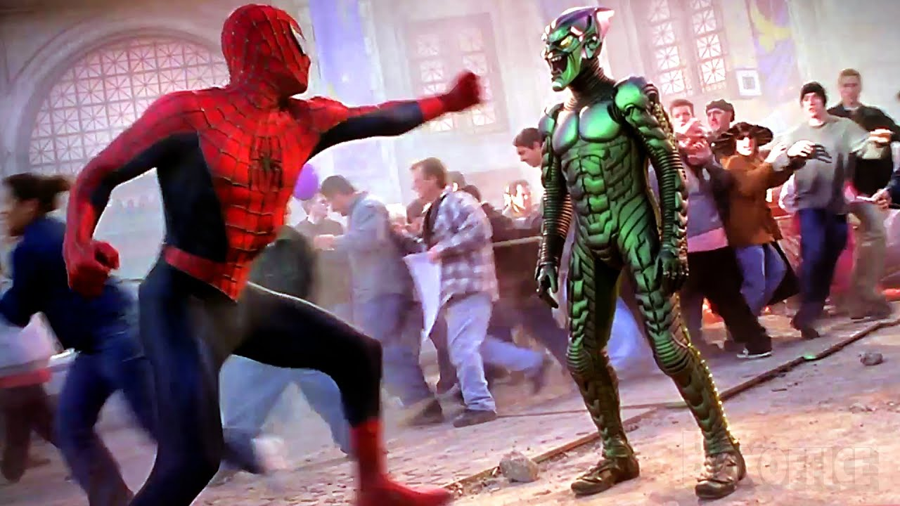

Caos en las Alturas: Spiderman y el Duende Verde Colisionan en una Batalla Épica
Por J. Jonah Jameson
Nueva York, 17 de marzo de 2024
En una ciudad que nunca duerme, la noticia de una pelea entre dos titanes enmascarados ha sacudido los cimientos de Manhattan. Spiderman, el enmascarado amigable del vecindario, y su archirrival, el infame Duende Verde, se enfrentaron en un enfrentamiento cargado de adrenalina que dejó a los neoyorquinos en vilo y a los edificios temblando.
El caos estalló en las alturas de la ciudad cuando el Duende Verde, conocido por su astucia y malicia, desató su última ola de terror. Testigos presenciales informaron haber visto a la figura siniestra surcar los cielos sobre el horizonte de la Gran Manzana, riendo maniacalmente mientras sembraba el pánico a su paso. Los informes de explosiones y estruendos resonaron en las calles, señalando que el Duende Verde estaba en plena acción. Sin embargo, donde hay caos, surge la esperanza en forma de un héroe enmascarado. Spiderman, el valiente defensor de los inocentes, no tardó en aparecer para enfrentarse a su eterno enemigo. Los ciudadanos observaron con asombro mientras el Hombre Araña se balanceaba entre los rascacielos, determinado a detener al Duende Verde y poner fin a su alboroto. La batalla que siguió fue una exhibición de habilidades sobrehumanas y astucia estratégica. Entre el rugido de los motores y el crujido de los edificios, Spiderman y el Duende Verde se enzarzaron en un enfrentamiento aéreo que desafió las leyes de la física. Los transeúntes se quedaron boquiabiertos mientras los dos adversarios se lanzaban acrobacias y golpes, cada uno luchando con todas sus fuerzas para ganar la supremacía. Pero más allá de los puñetazos y los lanzamientos de telarañas, esta batalla fue una prueba de valores y convicciones. Mientras el Duende Verde buscaba sembrar el caos y la destrucción, Spiderman se mantuvo firme en su compromiso de proteger a los inocentes y preservar la paz en la ciudad que juró defender. Su determinación inquebrantable y su espíritu indomable inspiraron a los ciudadanos de Nueva York a mantener la esperanza incluso en los momentos más oscuros. Finalmente, después de una intensa lucha que dejó una estela de destrucción en su estela, Spiderman logró contener al Duende Verde y entregarlo a las autoridades. Con su enemigo derrotado y la ciudad a salvo una vez más, el Hombre Araña se desvaneció en la noche, dejando atrás un susurro de admiración y gratitud. A medida que Nueva York se recupera de los estragos de esta épica batalla, queda claro que, en la lucha eterna entre el bien y el mal, la luz siempre prevalecerá sobre la oscuridad. Y mientras Spiderman siga tejiendo su red de protección sobre la ciudad, los ciudadanos pueden descansar sabiendo que, sin importar las amenazas que se avecinen, siempre habrá un héroe dispuesto a defenderlos.
J. Jonah Jameson - Editor en Jefe, Daily Bugle